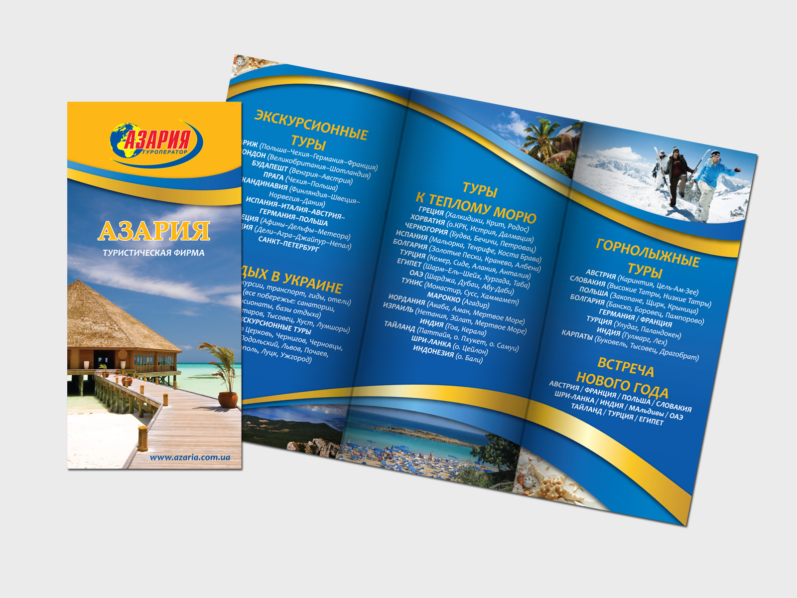
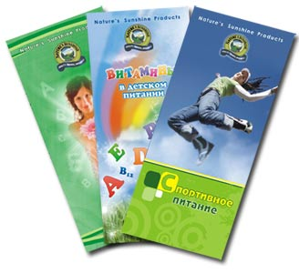

Изготовление и печать буклетов
Буклеты рекламные – это полиграфическая продукция, которую используют для раздачи на презентациях и выставках, для рассылки по почте. Они представляют собой лист формата А4 (реже - А3), согнутый или сфальцованный в двух местах. В итоге, чаще всего формат сложенного буклета равен формату еврофлаера. Буклет печатается только с двух сторон, и вмещает большое количество информации, от подробного описания услуг до карты проезда.
Где могут напечатать буклеты Киев и Украина?
Буклеты в Киеве рекомендуется печатать только в типографии «Вольф», так как наша типография обладает рядом преимуществ, благодаря которым она является типографией №1 в Украине. На производстве установлены только высокопрофессиональные печатные машины и другое полиграфическое оборудование, которое является взаимозаменяемым. Это значит, что заказчик обязательно получит свои буклеты в срок, даже если один из наших приборов выйдет из строя. Кроме того, наша типография доставляет буклеты по всей территории Украины.
Рекламные буклеты в любом количестве за день!
Заказывая буклеты, Киев может получить готовую продукцию в день заказа, если тираж печатался цифровым методом. Цифровая печать позволяет напечатать более яркие и красочные буклеты, с использованием тиснения или шелкотрафарета. Но при больших тиражах (более 1000 шт) стоимость буклетов при цифровой печати обойдется довольно дорого. Поэтому, при необходимости напечатать буклеты в количестве более 1000 шт, мы рекомендуем заказать офсетную печать. Она выйдет дешевле, а качество печати ничуть не пострадает. Офсетная печать буклетов производится за несколько дней. Мы доставляем буклеты во все уголки Украины, а не только по Киеву.
Буклеты рекламные: качество, проверенное опытом
Рекламные буклеты с каждым месяцем становятся все более популярными. Ведь на флаере или листовке не напечатаешь много информации, а вот буклет позволяет донести до потенциального заказчика все нюансы предлагаемого товара или услуги, рассказать обо всех акциях и скидках, и даже разместить множество фотографий наиболее продаваемой продукции. Часто на буклетах печатают мини-каталоги продукции, или прайс-листы. Поэтому, если Вам необходимо донести до покупателя как раз подобного рода информацию, заказывайте разработку макета двухстороннего буклета и его печать - самой оперативной и профессиональной типографии в Украине.

